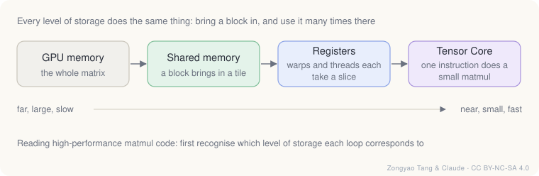
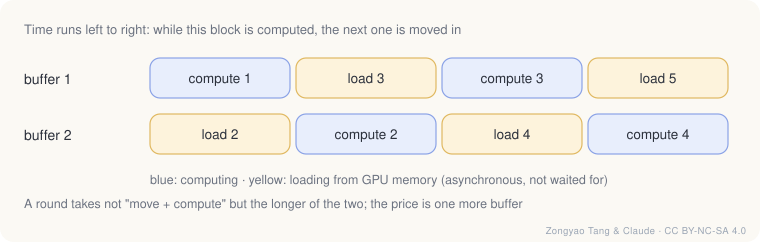

The thread: matrix multiplication is compute-bound, so first look at the dedicated units the hardware provides for it, Tensor Cores → once compute goes up, the bottleneck returns to "can the data be fed fast enough", so tiling is needed at every level of storage → then a software pipeline hides the time spent waiting for data → finally, after optimising all the way, how far from cuBLAS it still is, and where the gap lies. This unit is optional reading: in real work matrix multiplication comes from a library; learning it shows where performance comes from.
Part 4 · Operators and kernels4.5 The limits of matrix multiplication, and Tensor Cores
Translated by AI (Anthropic's Claude) from the Chinese edition. The Chinese original is the reference.
This unit answersHow do you take matrix multiplication from "it runs" to close to the hardware's limit?
Follows the tiling of 3.3 and the checklist of 3.4: this time the goal is to catch up with cuBLAS.
- A Tensor Core computes a small matrix multiplication in one instruction
- Tiling takes several levels: block, warp and thread each take a piece
- Compute this piece while moving the next
- Chasing cuBLAS: knowing where the gap is matters more than closing it
Explanation
1A Tensor Core computes a small matrix multiplication in one instruction
An ordinary CUDA core does one multiply-add at a time; a Tensor Core, driven by a whole warp, completes the multiply-add of a small matrix block (such as 16×8×16) at once, with inputs in low-precision formats such as fp16, bf16, tf32 or fp8 and accumulation in fp32. Its throughput is an order of magnitude higher than the ordinary cores'.
Ordinary arithmetic units. As 3.3 explained, the GPU's computation is executed by groups of threads (warps, 32 threads). Ordinarily each thread does one scalar operation per instruction: one multiplication, or one multiply-add. Each output element of the matrix multiplication C = A × B is the dot product of a row and a column, many multiply-adds, done by the threads one at a time.
Tensor Cores. These are hardware units in the SM designed specifically for matrix multiplication. One instruction, with a whole warp cooperating, completes "one small matrix times another small matrix, added to a third small matrix". A common shape is a 16×16 tile of A and a 16×8 tile of B, accumulated into a 16×8 tile of C. The multiply-adds in this one instruction would take ordinary units a thousand-odd instructions. So the amount of arithmetic done in the same time is an order of magnitude higher. The gap between the two TFLOPS figures in a GPU's specifications, "Tensor Core half-precision peak" and "ordinary single-precision peak", comes from here.
Conditions for using them.
- Low precision. Inputs are 16 bits (fp16, bf16) or lower (8-bit integers, fp8); 32-bit inputs can go through a mode that lowers precision internally (TF32). Results are usually accumulated in 32 bits so that errors do not build up. This is the hardware reason behind "switch to bf16 or TF32 to use Tensor Cores" in 1.5.
- Data arranged in small blocks. The instruction's input is "a small matrix held jointly by the threads of a warp". Which elements of that block each thread's registers must hold is fixed by rule. So before calling it, the data must already have moved from memory through shared memory into registers, in the right places.
- Round sizes. The matrices' dimensions should be multiples of the tile size; otherwise the edges need separate handling. "Round dimensions to multiples of 64 or 128" in 1.5 is about this.
The bottleneck moves with it. Without Tensor Cores, matrix multiplication is compute-bound: the arithmetic units cannot keep up. With them, the arithmetic is an order of magnitude faster, and "moving data from memory into registers" can no longer keep pace. The same kernel goes from compute-bound to bandwidth-bound. This is the first idea of 0.1 in its typical form: remove one bottleneck and the next one comes to the surface. The tiling and pipelining of the next two cards are both about feeding the data fast enough.
Do you need to use them yourself? Hardly ever. cuBLAS, cuDNN and Triton's compiler use them automatically whenever the conditions are met. What you do is meet the conditions: turn on mixed precision (2.6), round the dimensions. To confirm they are in use, look at the names of the matrix multiplication kernels in the profiler, or simply compare throughput with mixed precision on and off.
An analogyAn ordinary core is like a worker who can tighten one screw at a time; a Tensor Core is like a press that stamps out a whole part at once.
So to use Tensor Cores, data must be in low-precision formats and arranged in small blocks; the ceiling on compute jumps up, and the bottleneck goes back to "can the data be fed fast enough".
Builds on Arithmetic intensity: how many operations per byte movedFewer bits per number, half the data to moveSourcesCUDA for LLMs chapter 7: Tensor CoresCUDA for LLMs chapter 6: low precision and throughputCUDA Programming Guide- Compute is enough; the next problem is getting data to the Tensor Cores fast enough. 3.3 covered one level of tiling; here it takes several.
2Tiling takes several levels: block, warp and thread each take a piece
A high-performance matrix multiplication tiles once at every level of storage: a block moves a large piece into shared memory, then warps and threads move small pieces into registers, and each thread computes a small patch of output (such as 8×8) from the data in its registers. Each extra level of tiling raises arithmetic intensity another notch.
Recall the single level of tiling in 3.3. In naive matrix multiplication, each thread reads a whole row and a whole column from memory to compute one output element, and each number read is used once. With tiling, a block's threads together move a small piece of A and a small piece of B into shared memory, then all of them use those pieces again and again. Each number read from memory is used "the tile's side length" times, and arithmetic intensity rises to match.
Why one level is not enough. Shared memory is faster than GPU memory, but accessing it still has a cost; and the data a Tensor Core wants must be in registers. If every small matrix multiplication fetched from shared memory on the spot, shared memory accesses would become the bottleneck in turn. So another level is added between shared memory and the arithmetic units.

From GPU memory to the Tensor Cores, moved closer one level at a time Three levels of storage, three levels of tiling (from far to near):
Level Storage Responsible Size of a piece (example) First Shared memory One block The slices of A and B for a 128×128 output Second Registers One warp About 64×32 Third One Tensor Core instruction One call by a warp 16×8 The data flows: GPU memory → shared memory (a block moves a large piece together) → registers (each warp takes its own slice) → Tensor Cores (multiply small tile by small tile, accumulating in registers). When everything is computed, the accumulated results go from registers straight back to GPU memory.
Every level follows the same principle: move once from the more distant storage, use many times in the nearer storage. The more levels, the more fully each byte read from GPU memory is used.
What sets the size of a piece. Each level is limited by the capacity of its storage: shared memory is only one or two hundred KB per SM, and each thread has only a few dozen to two hundred-odd registers. A piece too large does not fit, or crowds out other blocks' resources (the occupancy of 3.3). These competing factors have no analytic solution, which is why the autotune of 4.3 is useful.
How to read this kind of code. High-performance matrix multiplication code looks frightening: several nested loops and masses of index arithmetic. But its skeleton is one sentence: for each level of storage, repeat "move a piece in, use it many times there". Recognise which level of storage each loop corresponds to, and the code reads through. CUTLASS (NVIDIA's open-source template library for matrix multiplication) is organised by exactly these three levels: block, warp, instruction.
An analogyLike logistics: trunk lorries carry goods to the city warehouse, vans take them to each district, and couriers deliver to the door; every leg runs as full as possible.
So GEMM code looks complex, but in essence it is the tiling idea of 3.3 done once at the shared-memory level and once at the register level, plus vectorised reads and writes.
Used later in Compute this piece while moving the nextSourcesCUDA for LLMs chapter 6: the optimisation pathCUDA for LLMs chapter 6: register tilingsiboehm: optimising a CUDA matmul step by step- Tiling solves "is each byte used enough". There is another problem: while the next piece of data is being moved, what are the arithmetic units doing?
3Compute this piece while moving the next
Once computation is fast, the time spent waiting for data stands out more. Double buffering prepares two buffers of shared memory: while one is being computed on, the other is already loading the next batch of data asynchronously, and the two proceed overlapped.
The problem. Done as in the previous card, a block's work is a loop: move a piece of A and B into shared memory → compute with them → move the next piece → compute… While "moving", the data is on its way from memory and the arithmetic units can only wait; while "computing", the memory path sits idle. The two alternate, and neither is fully loaded. With Tensor Cores computation is very fast, so "waiting for data" takes a larger share of each loop.
The cure. Prepare two buffers in shared memory (hence double buffering):
- Round k: compute on the data in buffer 1; meanwhile, start "move piece k+1 into buffer 2". This move is asynchronous; issued and not waited for.
- Round k+1: buffer 2's data has arrived, compute on it; meanwhile move piece k+2 into buffer 1.
The two buffers take turns playing "being computed on" and "being filled". Computing and moving overlap in time, and a round takes not "move + compute" but whichever of the two is longer.

Two buffers alternating between "computing" and "filling" Newer GPUs provide dedicated asynchronous copy instructions: start a copy "from GPU memory to shared memory", return at once, and wait for it to finish where the data is needed. This makes the scheme above more direct. The pipeline can also have more than two stages: start moving two or three pieces ahead, tolerating longer memory latency. Triton's
num_stagesparameter in 4.3 sets this number of stages.The same idea, once more. Compare it with other places in the course; the structure is identical:
Where Who is computing Who is moving at the same time Here (within one block) Tensor Cores compute the current piece The next piece moves from GPU memory into shared memory 2.4 (data loading) The GPU computes the current batch The CPU prepares the next batch and copies it to the GPU asynchronously 6.2 (NCCL's channels) A kernel processes one slot of the buffer The network card sends another slot 7.1 (DDP) The backward pass computes earlier layers Later layers' gradients are being all-reduced 7.2 (FSDP) The current layer is computed The next layer's parameters are prefetched All of them are "fill the waiting with other work" from 0.1. The only difference is scale: from one memory access in nanoseconds to one gradient synchronisation in milliseconds. The shared cost is the same too: one more buffer of space (here a second piece of shared memory; there a prefetched batch or one more layer of gathered parameters).
An analogyLike an assembly line: while the worker assembles the piece in hand, the parts for the next are already coming along the conveyor belt.
So memory latency is hidden behind computation; this kind of software pipeline can be seen in cuBLAS and CUTLASS.
Builds on The GPU does not avoid waiting; it fills the waiting with other workTiling takes several levels: block, warp and thread each take a pieceFive ideas come back in every layerSourcesCUDA for LLMs chapter 6: double buffering- With all these techniques in use, how far is it from a professional library?
4Chasing cuBLAS: knowing where the gap is matters more than closing it
Optimise matrix multiplication step by step (coalescing → shared-memory tiling → register tiling → vectorisation → Tensor Cores), and the checklist of 3.4 explains why each step is faster. The end result reaches eighty or ninety percent of cuBLAS, already very close to the hardware's limit.
A typical route of optimisation. For a matrix multiplication of fixed size, the problem each step solves and the corresponding unit:
- The naive version: one thread computes one output element, reading a row and a column from memory. Slow in memory access: each number is used once, and one of the matrices is read in jumps.
- Coalesced access (3.4): rearrange which thread handles which data, so neighbouring threads read neighbouring addresses.
- Shared-memory tiling (3.3): a piece of data moved in is used many times. This step usually gains the most.
- Register tiling (two cards back): each thread computes a small patch of output rather than one element.
- Vectorised reads and writes: read and write 4 numbers at once instead of 1, reducing the number of memory instructions.
- Double buffering (previous card): moving and computing overlap.
- Tensor Cores: switch to the dedicated hardware, and to low precision with it.
siboehm's widely praised blog post goes in exactly this order, optimising step by step from the naive version to close to cuBLAS, with measurements at every step. Chapters 6 and 7 of CUDA for LLMs take the same route and end at over eighty percent of cuBLAS.
The checklist of 3.4 explains every step. This is the real value of walking the route: not getting a matrix multiplication, but seeing with your own eyes how many times the performance each concept, "compute-bound", "bandwidth-bound", "hiding latency", is worth.
Where the remaining gap is. Library authors do more:
- Tune separately for each GPU generation, each matrix shape and each data type, and choose among implementations at run time by the actual case.
- Handle all kinds of irregular cases: sizes that are not multiples of the tile, very flat or very narrow matrices, non-contiguous memory layouts.
- Use proprietary features of the newest hardware, often before they are publicly documented.
Closing the last ten or twenty percent takes more work than the first eighty put together, and has to be redone for every hardware generation.
So the division of labour in real engineering is:
- Standard matrix multiplications and convolutions: use cuBLAS and cuDNN directly. Under PyTorch's
matmulandnn.Linear, that is what you get. - When matrix multiplication has to be fused with other operations and no library has it ready-made (Flash Attention is the best example): write it in Triton, or on top of a template library like CUTLASS. That is where these techniques come into play.
As 0.2 put it, when you are within ten or twenty percent of the ceiling, it is time to attack a different bottleneck. Matrix multiplication is the classic case.
An analogyLike learning to cook by comparing with a famous chef's version: not matching it exactly is fine; what matters is being able to taste whether the difference is in the heat or the seasoning.
So in real engineering, matrix multiplication comes straight from cuBLAS or CUTLASS; the point of writing your own is to understand where performance comes from, and to use these techniques in fused operators the libraries do not cover.
SourcesCUDA for LLMs chapter 7: reaching 87% of cuBLASsiboehm: optimising a CUDA matmul step by stepAleksa Gordić: inside matmul
Putting it together
Tensor Cores let a warp complete a small block of matrix multiplication in one instruction, an order of magnitude more compute, but they need low-precision data arranged in blocks. Feeding them means tiling level by level in shared memory and registers, plus double buffering so moving data overlaps with computing. This reaches eighty or ninety percent of cuBLAS; real engineering uses cuBLAS directly, and these techniques go into fused operators the libraries do not cover.
Test yourself
Without looking back at the explanation, say it in your own words.
- How do Tensor Cores differ from ordinary CUDA cores? What conditions does using them require?
- Why does high-performance matrix multiplication tile at several levels? Which level of storage does each one use?
- What problem does double buffering (a software pipeline) solve? How does it overlap moving data with computing?
- What stages does step-by-step optimisation of a hand-written matrix multiplication roughly go through? Why does real engineering still use cuBLAS directly?